Portfólio.
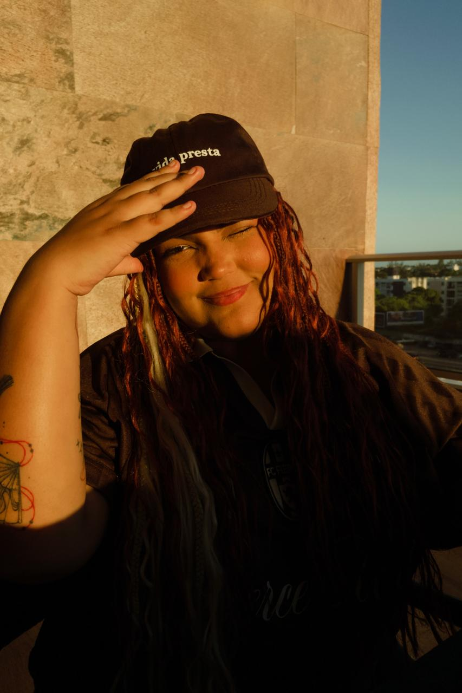
Sobre Mim
Toda
comunidade
tem uma
história.
Vamos
construir a
sua?
MINHA TRAJETÓRIA
Sou uma profissional de comunicação
digital apaixonada por conectar marcas
e pessoas. Minha trajetória une
atendimento, relacionamento e criação
de conversas que aproximam
comunidades das marcas que
acompanham. Acredito que cada
interação é uma oportunidade de
escutar, compreender e construir
relações mais genuínas.
O QUE FAÇO DE MELHOR
- Community Management e relacionamento com
comunidades - SAC 2.0: atendimento humanizado em comentários
e mensagens privadas - Social listening e monitoramento de marca
- Moderação, classificação de interações e análise
de sentimentos - Mapeamento de oportunidades e conversas
relevantes - Relatórios, análise de métricas e insights
- Tom de voz e comunicação alinhados à identidade
de cada marca
ONDE CONSTRUÍ MINHA EXPERIÊNCIA
Ao longo da minha trajetória,
passei por projetos e marcas
de diferentes segmentos,
como Panini, Méqui, Smart Fit e
Allp Fit. Essa experiência me
permitiu desenvolver um olhar
versátil para a comunicação,
atuando com SAC,
Community Management,
monitoramento de conversas,
relacionamento com o público
e gestão de comunidades
digitais.
Skills &Expertise
FERRAMENTAS
- Buzzmonitor
- Stilingue
- Meta Business Suite
- Instagram e TikTok
- Google WORKSPACE
- Notion
- Asana
- Trello
- Slack
- Discord
ÁREAS DE ATUAÇÃO
- SAC 2.0 e atendimento digital
- Community Management
- Gestão de comunidades
- Social listening e monitoramento
de marca - Engajamento e relacionamento
com o público - Análise de sentimento e
categorização de menções - Relatórios de desempenho e
insights - Mapeamento de tendências e
conversas relevantes
COMPETÊNCIAS
- Comunicação humanizada
- Escrita e adaptação de tom
de voz - Gestão de crises e situações
sensíveis - Escuta ativa e empatia
- Moderação e gestão de
conversas - Pensamento analítico
- Organização e gestão de
demandas - Identificação de
oportunidades de interação
Uma profissional
de comunicação
conecta marcas e
pessoas com
estratégia, empatia
e criatividade.
Marcas
que
já trabalhei
-
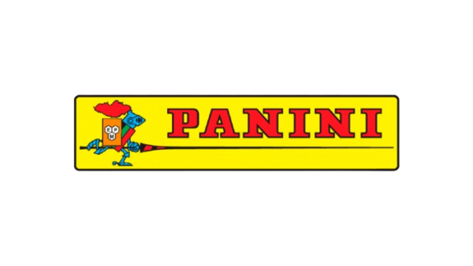
-
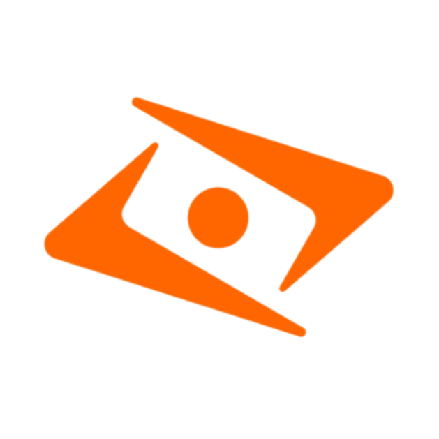
-
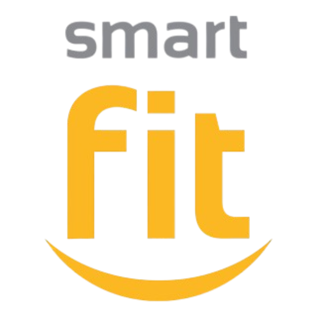

CASES Community Manager
Panini Community Management & Sac
A partir do monitoramento das redes sociais, identifiquei
oportunidades para inserir a Panini em conversas
relevantes e tendências do universo digital. Com
interações criativas, espontâneas e alinhadas ao tom de
voz da marca, busquei aproximá-la da comunidade de
colecionadores e ampliar sua participação nas
conversas.
No total, mais de 144 mil interações em mar aberto entre
curtidas e comentários — e esses são só os favoritos.
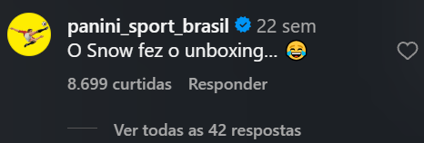
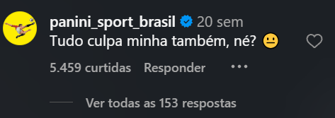
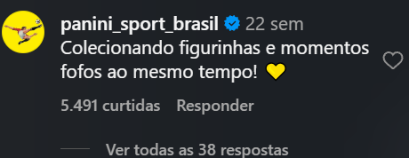
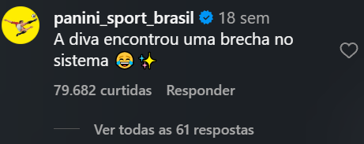
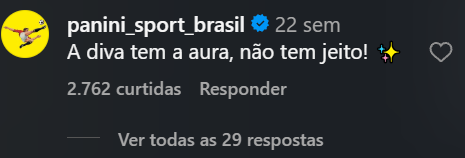
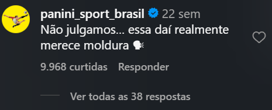
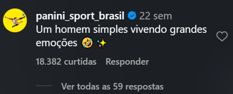
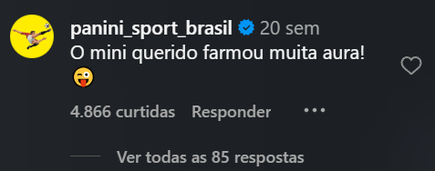
Panini Sac & Social listening
Diante do alto volume de reclamações sobre atrasos no álbum da Copa e erros em figurinhas,
desenvolvi uma árvore de tags no Buzzmonitor para organizar as menções e facilitar a identificação dos
principais assuntos e demandas da comunidade.
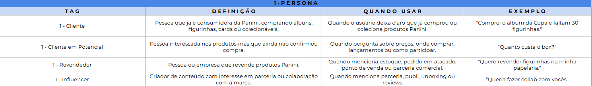
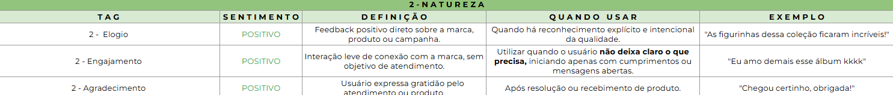
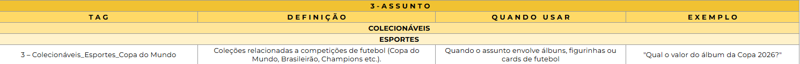
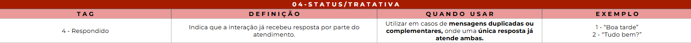
Méqui Community Management & Sac & Social listening
Minha atuação no Méqui era focada principalmente no
atendimento ao consumidor pelas redes sociais, buscando
oferecer respostas ágeis e alinhadas ao tom de voz da marca.
Também participei de oportunidades de Community
Management e M aberto, com interações que aproximaram a
marca da comunidade e ganharam destaque nas conversas
digitais.
No total, mais de 165 mil curtidas em interações orgânicas.
Sem impulsionamento. Só com timing, tom de voz e o
momento certo.
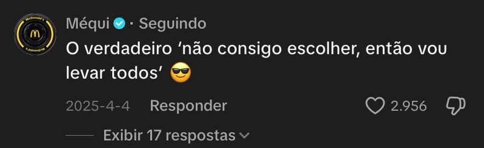
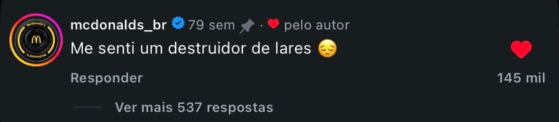
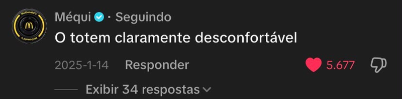
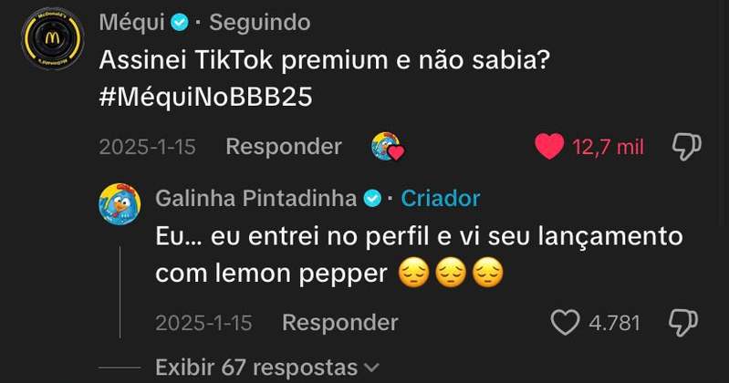
Allp Fit Community Management & Sac & Social listening
Conectando a Allp Fit à sua comunidade
Atuação no relacionamento com a comunidade nas redes
sociais, unindo atendimento, criatividade e respostas
alinhadas ao tom de voz da marca. O objetivo é transformar
interações cotidianas em oportunidades de aproximação e
fortalecer a conexão com o público.
Em seis meses, as interações em mar aberto ultrapassaram
160 mil curtidas, registrando um crescimento de
aproximadamente 144% entre maio e junho.
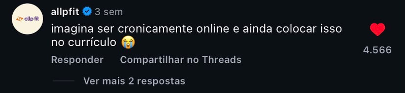
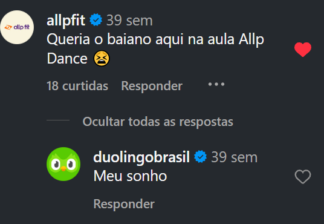
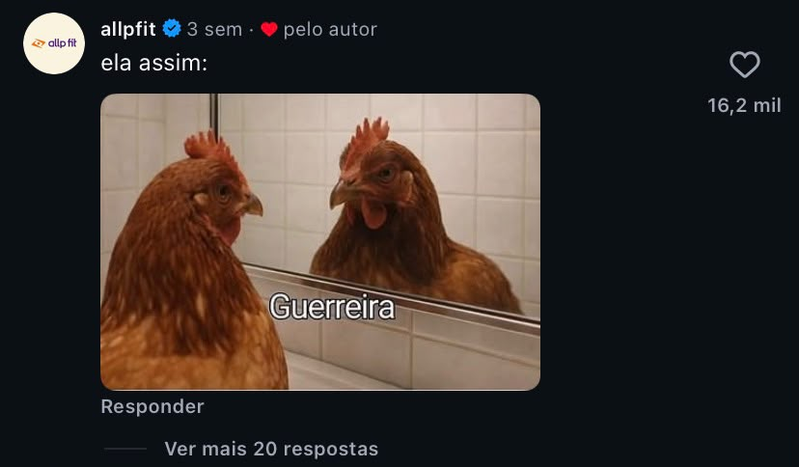
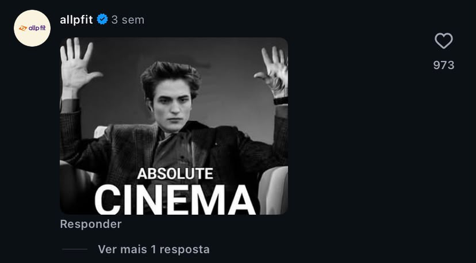
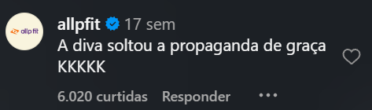
Allp Fit Community Management & Sac & Social listening
A ideia surgiu a partir da minha própria experiência com
canais de transmissão no Instagram. Ao perceber o
potencial desse formato e identificar que a comunidade da
Allp Fit tinha um perfil favorável à iniciativa, desenvolvi uma
proposta proativa e a coloquei em prática antes mesmo de
apresentá-la à liderança. A ideia foi bem recebida e
seguimos com o projeto. Hoje, sou responsável pela
administração do canal, organização do calendário de
mensagens e manutenção desse espaço de
relacionamento com a comunidade.
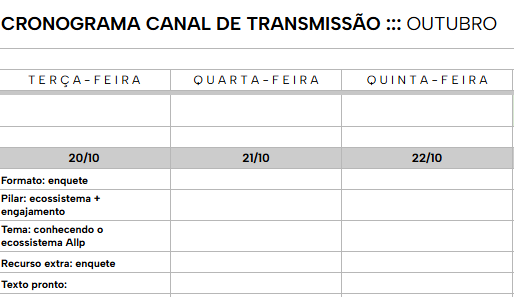
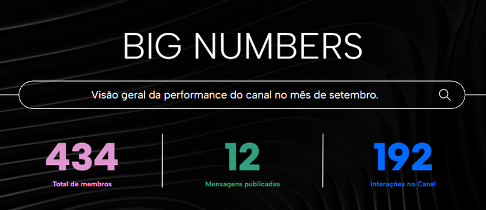
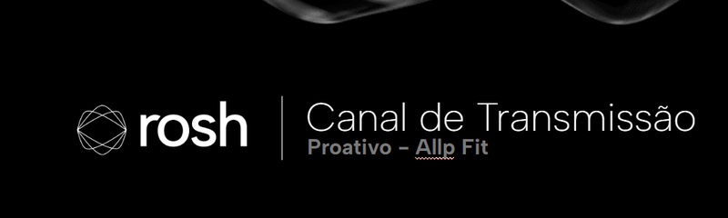
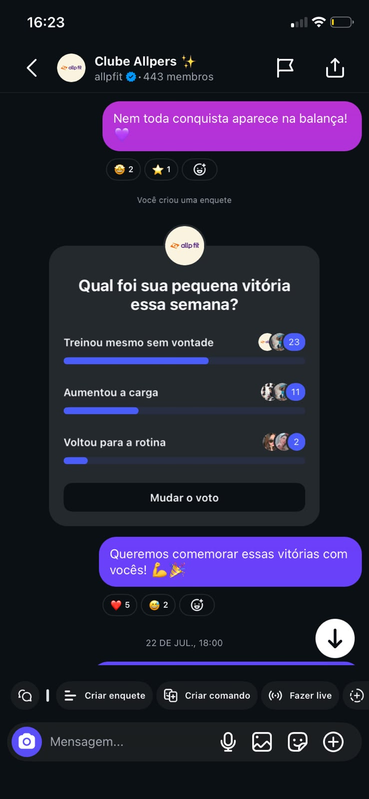
Boas conexões
começam com
uma conversa.
Vamos começar a nossa?
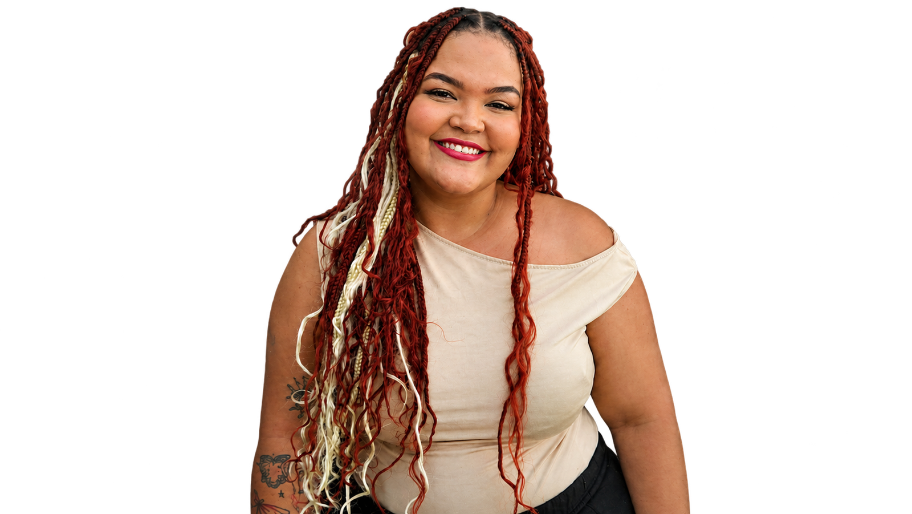